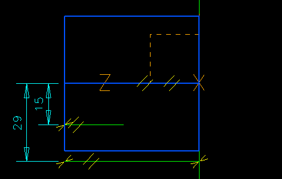

| Next Page | Previous Page | First Page |

SIP on the XY plane of the First Coordinate System.

Add Focus on the coordinate system (CS3) center, not the circle center.
"Start to define the shape of
the part.
The part will be symmetrical
so I'll start by building half.
Notice the graphical feedback
as the arc is dragged around and aligned to the center point."


Add a Line from arc end to arc end.

Constrain the line to pass through the Arc center point.
"Notice the the Dynamic Navigator helping me add the line from arc end to arc end."

Modify the radius to 25mm

Extrude this section 50mm

SIP on the back flat face of this extrusion.

Turn Off hardware shading
Look normal to the sketch plane.
"Need to make a cutout that is related to the size of the previous extrusion, SIP and focus help me."
Focus of the Center line. Values are
not important yet, as we will change them in a couple of steps.

Add an Arc from the line end down onto the
right end of the bottom green line.
If you get a radial dimension, Delete it.

Add a tanagency constraint between the arc and the bottom green line.

Add the dimensional constraint from the left blue edge to the arc end point.
"Again notice how the Dynamic Navigator helps me select the geomtery as I add geometry and constraints."
Modify dimensions as shown.
Extrude, Stop_at_Intersections ON, Through_ALL and CUT out this section.